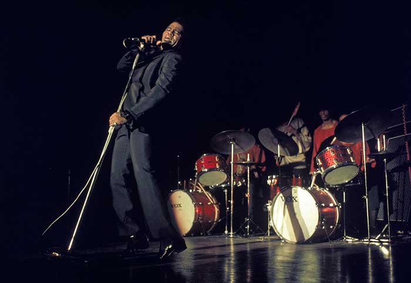
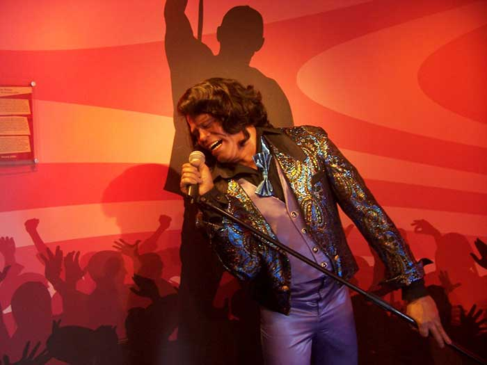

JAMES BROWN
Funk

Le funk est une forme de musique afro-américaine apparue aux États-Unis à la fin des années 1950, dans la lignée du mouvement Hard bop, et qui s'est développée au cours des années 1960 et années 1970. Selon certaines interprétations, le terme funk proviendrait de l'argot anglo-américain funky, qui signifie littéralement « puant », « qui sent la sueur », reproche traditionnellement adressé aux noirs par les WASP, et repris ensuite à leur compte par les artistes noirs tel que Horace Silver dans son morceau "Opus de Funk" (1953) .
Issu principalement de la soul et du jazz, le funk se caractérise par la prédominance de la section rythmique (guitare, basse, batterie) qui joue des motifs syncopés, la présence fréquente de cuivres ou de saxophones sur des ponctuations rythmiques (riffs) ou bien des solos, et de manière générale, par la grande place accordée aux instruments.

Avec son concept développé à la fin des années 1960, « The One » (c'est-à-dire l'appui rythmique sur le premier temps), James Brown, au carrefour du gospel, du rhythm and blues, de la soul, du blues et du rock, synthétisant toute la musique noire américaine du XXe siècle, fut considéré comme le parrain du funk, notamment avec des titres comme Say It loud, I am black and I am proud, I can't stand myself, Licking stick, Give it up or turnit a loose, There was a time,Super Bad, I Got the Feelin' , Funky Drummer, Talking Loud and Saying Nothing, Soul Power, Mother Popcorn et Sex Machine.
Mais les origines du funk remontent aux années 50 à La Nouvelle Orléans où l'idée de ces rythmiques est venue des bars de La Nouvelle Orléans qui étaient pauvres et ne possédaient qu'un piano pour distraire la clientèle. Le piano était pour les musiciens l'instrument idéal pour synthétiser à la fois la basse, la batterie, la guitare, le chant ou les cuivres sur un seul instrument. Le funk débarqua ensuite dans les rues de La Nouvelle Orléans, interprété par les Brass Band bien avant que James Brown et le saxophoniste Maceo Parker ne popularisent son style.